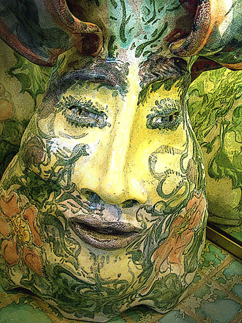

In the House of Disguises
by Jennifer Reeser

(Rue St. Ann, French Quarter, New Orleans)
Paneled walls adorned with masks:
Spanish, African, from Venice,
some a comfort, some a menace —
all a master craftsman’s tasks.
Glassy hurricane lanterns glow,
raised on shelves or ceiling grooves,
hooks. The makers’ skill improves
further towards the back you go.
Ostrich plumes or batwing edges
feather blithely, as you brush
past the difficult and lush
miniature French terrace ledges
used as masquerader props.
Black Arachne bares her canines;
Pan, Anubis, woman-felines,
sprites or grinning lollipops
swing from zombie walnut cases,
cueing – through their dingy portal —
visions of the vague immortal:
Time defied by timeless faces.
Sniffling faintly, frail and plump,
fair, the shopgirl tells you tales.
Counter to the room, she pales —
quick, in its dim joy, to jump.
Oh, to reach out boldly, take
hold, and veil in silver leaf!
Harshness here is bas relief,
Pathos all for Pathos’ sake.
Half the native bravery
one needs to lean out and grasp,
saps into each jack and asp.
European revelry,
never so distinctly felt,
leaves you open, leaves you only —
half in love with lovely, lonely
poltergeists of card and Celt.
In the House of Disguises from Briareus on Vimeo.
 |